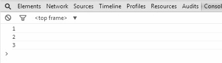

高阶函数是指至少满足下列条件之一的函数。
函数可以作为参数被传递；
函数可以作为返回值输出。
JavaScript语言中的函数显然满足高阶函数的条件，在实际开发中，无论是将函数当作参数传递，还是让函数的执行结果返回另外一个函数，这两种情形都有很多应用场景，下面就列举一些高阶函数的应用场景。
把函数当作参数传递，这代表我们可以抽离出一部分容易变化的业务逻辑，把这部分业务逻辑放在函数参数中，这样一来可以分离业务代码中变化与不变的部分。其中一个重要应用场景就是常见的回调函数。
1. 回调函数
在ajax异步请求的应用中，回调函数的使用非常频繁。当我们想在ajax请求返回之后做一些事情，但又并不知道请求返回的确切时间时，最常见的方案就是把callback函数当作参数传入发起ajax请求的方法中，待请求完成之后执行callback函数：
var getUserInfo = function( userId, callback ){
$.ajax( 'http://xxx.com/getUserInfo?' + userId, function( data ){
if ( typeof callback === 'function' ){
callback( data );
}
});
}
getUserInfo( 13157, function( data ){
alert ( data.userName );
});
回调函数的应用不仅只在异步请求中，当一个函数不适合执行一些请求时，我们也可以把这些请求封装成一个函数，并把它作为参数传递给另外一个函数，“委托”给另外一个函数来执行。
比如，我们想在页面中创建100个div节点，然后把这些div节点都设置为隐藏。下面是一种编写代码的方式：
var appendDiv = function(){
for ( var i = 0; i < 100; i++ ){
var div = document.createElement( 'div' );
div.innerHTML = i;
document.body.appendChild( div );
div.style.display = 'none';
}
};
appendDiv();
把div.style.display = 'none'的逻辑硬编码在appendDiv里显然是不合理的，appendDiv未免有点个性化，成为了一个难以复用的函数，并不是每个人创建了节点之后就希望它们立刻被隐藏。
于是我们把div.style.display = 'none'这行代码抽出来，用回调函数的形式传入appendDiv方法：
var appendDiv = function( callback ){
for ( var i = 0; i < 100; i++ ){
var div = document.createElement( 'div' );
div.innerHTML = i;
document.body.appendChild( div );
if ( typeof callback === 'function' ){
callback( div );
}
}
};
appendDiv(function( node ){
node.style.display = 'none';
});
可以看到，隐藏节点的请求实际上是由客户发起的，但是客户并不知道节点什么时候会创建好，于是把隐藏节点的逻辑放在回调函数中，“委托”给appendDiv方法。appendDiv方法当然知道节点什么时候创建好，所以在节点创建好的时候，appendDiv会执行之前客户传入的回调函数。
2. Array.prototype.sort
Array.prototype.sort接受一个函数当作参数，这个函数里面封装了数组元素的排序规则。从Array.prototype.sort的使用可以看到，我们的目的是对数组进行排序，这是不变的部分；而使用什么规则去排序，则是可变的部分。把可变的部分封装在函数参数里，动态传入Array.prototype.sort，使Array.prototype.sort方法成为了一个非常灵活的方法，代码如下：
//从小到大排列
[ 1, 4, 3 ].sort( function( a, b ){
return a - b;
});
// 输出: [ 1, 3, 4 ]
//从大到小排列
[ 1, 4, 3 ].sort( function( a, b ){
return b - a;
});
// 输出: [ 4, 3, 1 ]
相比把函数当作参数传递，函数当作返回值输出的应用场景也许更多，也更能体现函数式编程的巧妙。让函数继续返回一个可执行的函数，意味着运算过程是可延续的。
1. 判断数据的类型
我们来看看这个例子，判断一个数据是否是数组，在以往的实现中，可以基于鸭子类型的概念来判断，比如判断这个数据有没有length属性，有没有sort方法或者slice方法等。但更好的方式是用Object.prototype.toString来计算。Object.prototype.toString.call( obj )返回一个字符串，比如Object.prototype.toString.call( [1,2,3] )总是返回"[object Array]"，而Object.prototype.toString.call( "str")总是返回"[object String]"。所以我们可以编写一系列的isType函数。代码如下：
var isString = function( obj ){
return Object.prototype.toString.call( obj ) === '[object String]';
};
var isArray = function( obj ){
return Object.prototype.toString.call( obj ) === '[object Array]';
};
var isNumber = function( obj ){
return Object.prototype.toString.call( obj ) === '[object Number]';
};
我们发现，这些函数的大部分实现都是相同的，不同的只是Object.prototype.toString.call( obj )返回的字符串。为了避免多余的代码，我们尝试把这些字符串作为参数提前值入isType函数。代码如下：
var isType = function( type ){
return function( obj ){
return Object.prototype.toString.call( obj ) === '[object '+ type +']';
}
};
var isString = isType( 'String' );
var isArray = isType( 'Array' );
var isNumber = isType( 'Number' );
console.log( isArray( [ 1, 2, 3 ] ) ); // 输出：true
我们还可以用循环语句，来批量注册这些isType函数：
var Type = {};
for ( var i = 0, type; type = [ 'String', 'Array', 'Number' ][ i++ ]; ){
(function( type ){
Type[ 'is' + type ] = function( obj ){
return Object.prototype.toString.call( obj ) === '[object '+ type +']';
}
})( type )
};
Type.isArray( [] ); // 输出：true
Type.isString( "str" ); // 输出：true
2. getSingle
下面是一个单例模式的例子，在第三部分设计模式的学习中，我们将进行更深入的讲解，这里暂且只了解其代码实现：
var getSingle = function ( fn ) {
var ret;
return function () {
return ret || ( ret = fn.apply( this, arguments ) );
};
};
这个高阶函数的例子，既把函数当作参数传递，又让函数执行后返回了另外一个函数。我们可以看看getSingle函数的效果：
var getScript = getSingle(function(){
return document.createElement( 'script' );
});
var script1 = getScript();
var script2 = getScript();
alert ( script1 === script2 ); // 输出：true
AOP（面向切面编程）的主要作用是把一些跟核心业务逻辑模块无关的功能抽离出来，这些跟业务逻辑无关的功能通常包括日志统计、安全控制、异常处理等。把这些功能抽离出来之后，再通过“动态织入”的方式掺入业务逻辑模块中。这样做的好处首先是可以保持业务逻辑模块的纯净和高内聚性，其次是可以很方便地复用日志统计等功能模块。
在Java语言中，可以通过反射和动态代理机制来实现AOP技术。而在JavaScript这种动态语言中，AOP的实现更加简单，这是JavaScript与生俱来的能力。
通常，在JavaScript中实现AOP，都是指把一个函数“动态织入”到另外一个函数之中，具体的实现技术有很多，本节我们通过扩展Function.prototype来做到这一点。代码如下：
Function.prototype.before = function( beforefn ){
var __self = this; // 保存原函数的引用
return function(){ // 返回包含了原函数和新函数的"代理"函数
beforefn.apply( this, arguments ); // 执行新函数，修正this
return __self.apply( this, arguments ); // 执行原函数
}
};
Function.prototype.after = function( afterfn ){
var __self = this;
return function(){
var ret = __self.apply( this, arguments );
afterfn.apply( this, arguments );
return ret;
}
};
var func = function(){
console.log( 2 );
};
func = func.before(function(){
console.log( 1 );
}).after(function(){
console.log( 3 );
});
func();
我们把负责打印数字1和打印数字3的两个函数通过AOP的方式动态植入func函数。通过执行上面的代码，我们看到控制台顺利地返回了执行结果1、2、3。

图 3-1
这种使用AOP的方式来给函数添加职责，也是JavaScript语言中一种非常特别和巧妙的装饰者模式实现。这种装饰者模式在实际开发中非常有用，我们将在第15章进行详细的讲解。有兴趣的读者可以提前翻阅第15章进行了解。
前面我们已经学习过高阶函数，本节我们再挑选一些常见的高阶函数应用进行介绍。
1. currying
首先我们讨论的是函数柯里化（function currying）。currying的概念最早由俄国数学家Moses Schönfinkel发明，而后由著名的数理逻辑学家Haskell Curry将其丰富和发展，currying由此得名。
currying又称部分求值。一个currying的函数首先会接受一些参数，接受了这些参数之后，该函数并不会立即求值，而是继续返回另外一个函数，刚才传入的参数在函数形成的闭包中被保存起来。待到函数被真正需要求值的时候，之前传入的所有参数都会被一次性用于求值。
从字面上理解currying并不太容易，我们来看下面的例子。
假设我们要编写一个计算每月开销的函数。在每天结束之前，我们都要记录今天花掉了多少钱。代码如下：
var monthlyCost = 0;
var cost = function( money ){
monthlyCost += money;
};
cost( 100 ); // 第1天开销
cost( 200 ); // 第2天开销
cost( 300 ); // 第3天开销
//cost( 700 ); // 第30天开销
alert ( monthlyCost ); // 输出：600
通过这段代码可以看到，每天结束后我们都会记录并计算到今天为止花掉的钱。但我们其实并不太关心每天花掉了多少钱，而只想知道到月底的时候会花掉多少钱。也就是说，实际上只需要在月底计算一次。
如果在每个月的前29天，我们都只是保存好当天的开销，直到第30天才进行求值计算，这样就达到了我们的要求。虽然下面的cost函数还不是一个currying函数的完整实现，但有助于我们了解其思想：
var cost = (function(){
var args = [];
return function(){
if ( arguments.length === 0 ){
var money = 0;
for ( var i = 0, l = args.length; i < l; i++ ){
money += args[ i ];
}
return money;
}else{
[].push.apply( args, arguments );
}
}
})();
cost( 100 ); // 未真正求值
cost( 200 ); // 未真正求值
cost( 300 ); // 未真正求值
console.log( cost() ); // 求值并输出：600
接下来我们编写一个通用的function currying(){}，function currying(){}接受一个参数，即将要被currying的函数。在这个例子里，这个函数的作用遍历本月每天的开销并求出它们的总和。代码如下：
var currying = function( fn ){
var args = [];
return function(){
if ( arguments.length === 0 ){
return fn.apply( this, args );
}else{
[].push.apply( args, arguments );
return arguments.callee;
}
}
};
var cost = (function(){
var money = 0;
return function(){
for ( var i = 0, l = arguments.length; i < l; i++ ){
money += arguments[ i ];
}
return money;
}
})();
var cost = currying( cost ); // 转化成currying函数
cost( 100 ); // 未真正求值
cost( 200 ); // 未真正求值
cost( 300 ); // 未真正求值
alert ( cost() ); // 求值并输出：600
至此，我们完成了一个currying函数的编写。当调用cost()时，如果明确地带上了一些参数，表示此时并不进行真正的求值计算，而是把这些参数保存起来，此时让cost函数返回另外一个函数。只有当我们以不带参数的形式执行cost()时，才利用前面保存的所有参数，真正开始进行求值计算。
2. uncurrying
在JavaScript中，当我们调用对象的某个方法时，其实不用去关心该对象原本是否被设计为拥有这个方法，这是动态类型语言的特点，也是常说的鸭子类型思想。
同理，一个对象也未必只能使用它自身的方法，那么有什么办法可以让对象去借用一个原本不属于它的方法呢？
答案对于我们来说很简单，call和apply都可以完成这个需求：
var obj1 = {
name: 'sven'
};
var obj2 = {
getName: function(){
return this.name;
}
};
console.log( obj2.getName.call( obj1 ) ); // 输出：sven
我们常常让类数组对象去借用Array.prototype的方法，这是call和apply最常见的应用场景之一：
(function(){
Array.prototype.push.call( arguments, 4 ); // arguments借用Array.prototype.push方法
console.log( arguments ); // 输出：[1, 2, 3, 4]
})( 1, 2, 3 );
在我们的预期中，Array.prototype上的方法原本只能用来操作array对象。但用call和apply可以把任意对象当作this传入某个方法，这样一来，方法中用到this的地方就不再局限于原来规定的对象，而是加以泛化并得到更广的适用性。
Array.prototype上的方法可以操作任何对象的原理可参阅2.2节。
那么有没有办法把泛化this的过程提取出来呢？本小节讲述的uncurrying就是用来解决这个问题的。uncurrying的话题来自JavaScript之父Brendan Eich在2011年发表的一篇Twitter。以下代码是uncurrying的实现方式之一：
Function.prototype.uncurrying = function () {
var self = this;
return function() {
var obj = Array.prototype.shift.call( arguments );
return self.apply( obj, arguments );
};
};
在讲解这段代码的实现原理之前，我们先来瞧瞧它有什么作用。
在类数组对象arguments借用Array.prototype的方法之前，先把Array.prototype.push.call这句代码转换为一个通用的push函数：
var push = Array.prototype.push.uncurrying();
(function(){
push( arguments, 4 );
console.log( arguments ); // 输出：[1, 2, 3, 4]
})( 1, 2, 3 );
通过uncurrying的方式，Array.prototype.push.call变成了一个通用的push函数。这样一来，push函数的作用就跟Array.prototype.push一样了，同样不仅仅局限于只能操作array对象。而对于使用者而言，调用push函数的方式也显得更加简洁和意图明了。
我们还可以一次性地把Array.prototype上的方法“复制”到array对象上，同样这些方法可操作的对象也不仅仅只是array对象：
for ( var i = 0, fn, ary = [ 'push', 'shift', 'forEach' ]; fn = ary[ i++ ]; ){
Array[ fn ] = Array.prototype[ fn ].uncurrying();
};
var obj = {
"length": 3,
"0": 1,
"1": 2,
"2": 3
};
Array.push( obj, 4 ); // 向对象中添加一个元素
console.log( obj.length ); // 输出：4
var first = Array.shift( obj ); // 截取第一个元素
console.log( first ); // 输出：1
console.log( obj ); // 输出：{0: 2, 1: 3, 2: 4, length: 3}
Array.forEach( obj, function( i, n ){
console.log( n ); // 分别输出：0, 1, 2
});
甚至Function.prototype.call和Function.prototype.apply本身也可以被uncurrying，不过这没有实用价值，只是使得对函数的调用看起来更像JavaScript语言的前身Scheme：
var call = Function.prototype.call.uncurrying();
var fn = function( name ){
console.log( name );
};
call( fn, window, 'sven' ); // 输出：sven
var apply = Function.prototype.apply.uncurrying();
var fn = function( name ){
console.log( this.name ); // 输出："sven"
console.log( arguments ); // 输出: [1, 2, 3]
};
apply( fn, { name: 'sven' }, [ 1, 2, 3 ] );
目前我们已经给出了Function.prototype.uncurrying的一种实现。现在来分析调用Array.prototype.push.uncurrying()这句代码时发生了什么事情：
Function.prototype.uncurrying = function () {
var self = this; // self此时是Array.prototype.push
return function() {
var obj = Array.prototype.shift.call( arguments );
// obj是{
// "length": 1,
// "0": 1
// }
// arguments对象的第一个元素被截去，剩下[2]
return self.apply( obj, arguments );
// 相当于Array.prototype.push.apply( obj, 2 )
};
};
var push = Array.prototype.push.uncurrying();
var obj = {
"length": 1,
"0": 1
};
push( obj, 2 );
console.log( obj ); // 输出：{0: 1, 1: 2, length: 2}
除了刚刚提供的代码实现，下面的代码是uncurrying的另外一种实现方式：
Function.prototype.uncurrying = function(){
var self = this;
return function(){
return Function.prototype.call.apply( self, arguments );
}
};
3. 函数节流
JavaScript中的函数大多数情况下都是由用户主动调用触发的，除非是函数本身的实现不合理，否则我们一般不会遇到跟性能相关的问题。但在一些少数情况下，函数的触发不是由用户直接控制的。在这些场景下，函数有可能被非常频繁地调用，而造成大的性能问题。下面将列举一些这样的场景。
(1) 函数被频繁调用的场景
window.onresize事件。我们给window对象绑定了resize事件，当浏览器窗口大小被拖动而改变的时候，这个事件触发的频率非常之高。如果我们在window.onresize事件函数里有一些跟DOM节点相关的操作，而跟DOM节点相关的操作往往是非常消耗性能的，这时候浏览器可能就会吃不消而造成卡顿现象。
mousemove事件。同样，如果我们给一个div节点绑定了拖曳事件（主要是mousemove），当div节点被拖动的时候，也会频繁地触发该拖曳事件函数。
上传进度。微云的上传功能使用了公司提供的一个浏览器插件。该浏览器插件在真正开始上传文件之前，会对文件进行扫描并随时通知JavaScript函数，以便在页面中显示当前的扫描进度。但该插件通知的频率非常之高，大约一秒钟10次，很显然我们在页面中不需要如此频繁地去提示用户。
(2) 函数节流的原理
我们整理上面提到的三个场景，发现它们面临的共同问题是函数被触发的频率太高。
比如我们在window.onresize事件中要打印当前的浏览器窗口大小，在我们通过拖曳来改变窗口大小的时候，打印窗口大小的工作1秒钟进行了10次。而我们实际上只需要2次或者3次。这就需要我们按时间段来忽略掉一些事件请求，比如确保在500ms内只打印一次。很显然，我们可以借助setTimeout来完成这件事情。
(3) 函数节流的代码实现
关于函数节流的代码实现有许多种，下面的throttle 函数的原理是，将即将被执行的函数用setTimeout延迟一段时间执行。如果该次延迟执行还没有完成，则忽略接下来调用该函数的请求。throttle函数接受2个参数，第一个参数为需要被延迟执行的函数，第二个参数为延迟执行的时间。具体实现代码如下：
var throttle = function ( fn, interval ) {
var __self = fn, // 保存需要被延迟执行的函数引用
timer, // 定时器
firstTime = true; // 是否是第一次调用
return function () {
var args = arguments,
__me = this;
if ( firstTime ) { // 如果是第一次调用，不需延迟执行
__self.apply(__me, args);
return firstTime = false;
}
if ( timer ) { // 如果定时器还在，说明前一次延迟执行还没有完成
return false;
}
timer = setTimeout(function () { // 延迟一段时间执行
clearTimeout(timer);
timer = null;
__self.apply(__me, args);
}, interval || 500 );
};
};
window.onresize = throttle(function(){
console.log( 1 );
}, 500 );
4. 分时函数
在前面关于函数节流的讨论中，我们提供了一种限制函数被频繁调用的解决方案。下面我们将遇到另外一个问题，某些函数确实是用户主动调用的，但因为一些客观的原因，这些函数会严重地影响页面性能。
一个例子是创建WebQQ的QQ好友列表。列表中通常会有成百上千个好友，如果一个好友用一个节点来表示，当我们在页面中渲染这个列表的时候，可能要一次性往页面中创建成百上千个节点。
在短时间内往页面中大量添加DOM节点显然也会让浏览器吃不消，我们看到的结果往往就是浏览器的卡顿甚至假死。代码如下：
var ary = [];
for ( var i = 1; i <= 1000; i++ ){
ary.push( i ); // 假设ary装载了1000个好友的数据
};
var renderFriendList = function( data ){
for ( var i = 0, l = data.length; i < l; i++ ){
var div = document.createElement( 'div' );
div.innerHTML = i;
document.body.appendChild( div );
}
};
renderFriendList( ary );
这个问题的解决方案之一是下面的timeChunk函数，timeChunk 函数让创建节点的工作分批进行，比如把1秒钟创建1000个节点，改为每隔200毫秒创建8个节点。
timeChunk函数接受3个参数，第1个参数是创建节点时需要用到的数据，第2个参数是封装了创建节点逻辑的函数，第3个参数表示每一批创建的节点数量。代码如下：
var timeChunk = function( ary, fn, count ){
var obj,
t;
var len = ary.length;
var start = function(){
for ( var i = 0; i < Math.min( count || 1, ary.length ); i++ ){
var obj = ary.shift();
fn( obj );
}
};
return function(){
t = setInterval(function(){
if ( ary.length === 0 ){ // 如果全部节点都已经被创建好
return clearInterval( t );
}
start();
}, 200 ); // 分批执行的时间间隔，也可以用参数的形式传入
};
};
最后我们进行一些小测试，假设我们有1000个好友的数据，我们利用timeChunk函数，每一批只往页面中创建8个节点：
var ary = [];
for ( var i = 1; i <= 1000; i++ ){
ary.push( i );
};
var renderFriendList = timeChunk( ary, function( n ){
var div = document.createElement( 'div' );
div.innerHTML = n;
document.body.appendChild( div );
}, 8 );
renderFriendList();
5. 惰性加载函数
在Web开发中，因为浏览器之间的实现差异，一些嗅探工作总是不可避免。比如我们需要一个在各个浏览器中能够通用的事件绑定函数addEvent，常见的写法如下：
var addEvent = function( elem, type, handler ){
if ( window.addEventListener ){
return elem.addEventListener( type, handler, false );
}
if ( window.attachEvent ){
return elem.attachEvent( 'on' + type, handler );
}
};
这个函数的缺点是，当它每次被调用的时候都会执行里面的if条件分支，虽然执行这些if分支的开销不算大，但也许有一些方法可以让程序避免这些重复的执行过程。
第二种方案是这样，我们把嗅探浏览器的操作提前到代码加载的时候，在代码加载的时候就立刻进行一次判断，以便让addEvent返回一个包裹了正确逻辑的函数。代码如下：
var addEvent = (function(){
if ( window.addEventListener ){
return function( elem, type, handler ){
elem.addEventListener( type, handler, false );
}
}
if ( window.attachEvent ){
return function( elem, type, handler ){
elem.attachEvent( 'on' + type, handler );
}
}
})();
目前的addEvent函数依然有个缺点，也许我们从头到尾都没有使用过addEvent函数，这样看来，前一次的浏览器嗅探就是完全多余的操作，而且这也会稍稍延长页面ready的时间。
第三种方案即是我们将要讨论的惰性载入函数方案。此时addEvent依然被声明为一个普通函数，在函数里依然有一些分支判断。但是在第一次进入条件分支之后，在函数内部会重写这个函数，重写之后的函数就是我们期望的addEvent函数，在下一次进入addEvent函数的时候，addEvent函数里不再存在条件分支语句：
<html>
<body>
<div id="div1">点我绑定事件</div>
<script>
var addEvent = function( elem, type, handler ){
if ( window.addEventListener ){
addEvent = function( elem, type, handler ){
elem.addEventListener( type, handler, false );
}
}else if ( window.attachEvent ){
addEvent = function( elem, type, handler ){
elem.attachEvent( 'on' + type, handler );
}
}
addEvent( elem, type, handler );
};
var div = document.getElementById( 'div1' );
addEvent( div, 'click', function(){
alert (1);
});
addEvent( div, 'click', function(){
alert (2);
});
</script>
</body>
</html>